Next: Non Metric-Based Segmentation Up: Speaker Segmentation Previous: Speaker Segmentation Contents
Metric based segmentation is probably the most used technique up to date. It relies on the computation of a distance between two acoustic segments to determine whether they belong to the same speaker or to different speakers, and therefore whether there exists a speaker change point in the audio at the point being analyzed. The two acoustic segments are usually next to each other (in overlap or not) and the change-point considered is between them. Most of the distances used for acoustic change detection can also be applied to speaker clustering in order to compare the suitability that two speaker clusters belong to the same speaker.
Let us consider two audio segments ( ,
, ) of parameterized
acoustic vectors
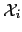 and
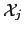 of lengths
) of parameterized
acoustic vectors
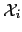 and
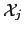 of lengths
 and
and  respectively, and with mean and standard
deviation values
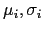 and
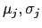. Each
one of these segments is modeled using Gaussian processes
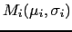 and
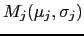, which
can be a single Gaussian or a Gaussian Mixture Model (GMM). On the
other hand, let's consider the agglomerate of both segments into
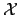, with mean and variance
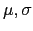 and the
corresponding Gaussian process
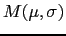.
respectively, and with mean and standard
deviation values
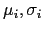 and
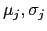. Each
one of these segments is modeled using Gaussian processes
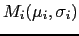 and
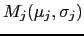, which
can be a single Gaussian or a Gaussian Mixture Model (GMM). On the
other hand, let's consider the agglomerate of both segments into
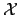, with mean and variance
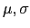 and the
corresponding Gaussian process
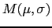.
In general, there are two different kinds of distances that can be
defined between any pair of such audio segments. The first kind
compares the sufficient statistics from the two acoustic sets of
data without considering any particular model applied to the data,
which from now on will be called statistics-based distances.
These are normally very quick to compute and give good performances
if  and
and  are big enough to robustly compute the data
statistics and the data being modeled can be well described using a
single Gaussian.
are big enough to robustly compute the data
statistics and the data being modeled can be well described using a
single Gaussian.
A second group of distances are based on the evaluation of the likelihood of the data according to models representing it. These distances are slower to compute (as models need to be trained and evaluated) but can achieve better results than the statistics-based one as bigger models can be used to fit more complex data. These will be referred as likelihood-based techniques. The following are the metrics that have been found of interest used in the literature for either case:
 is the
log-likelihood of the data given the considered model,
is the
log-likelihood of the data given the considered model,  is
a free design parameter dependent on the data being modeled,
estimated using development data;
is
a free design parameter dependent on the data being modeled,
estimated using development data;  is the number of frames in
the considered segment and
is the number of frames in
the considered segment and
 the number of free
parameters to estimate in model
the number of free
parameters to estimate in model
 . Such expression
is an approximation of the Bayes Factor (BF)
(Kass and Raftery (1995), Chickering and Heckerman (1997)) where the
acoustic models are trained via ML methods and
. Such expression
is an approximation of the Bayes Factor (BF)
(Kass and Raftery (1995), Chickering and Heckerman (1997)) where the
acoustic models are trained via ML methods and  is considered
big.
is considered
big.
In order to use BIC to evaluate whether a change point occurs
between both segments it evaluates the hypothesis that
better models the data versus the hypothesis that
 does instead, like in the GLR (Generalized
Likelihood Ratio), by computing:
does instead, like in the GLR (Generalized
Likelihood Ratio), by computing:
where P is the penalty term, which is a function of the number of free parameters in the model. For a full covariance matrix it is
The term 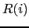 can be written for the case of models composed on a single Gaussian as:
For cases where GMM models with multiple Gaussian mixtures are used, eq. 2.2 is written as
where 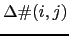 is the difference between the number of free parameters in the combined model versus the two individual models. For a mathematical proof on the equality of equations 2.3 and 2.4 please refer to the appendix section.
Although 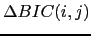 is the difference between two 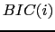 criteria in order to determine which model suits better the data, it is usual in the speaker diarization literature to refer to the difference as BIC criterion. For the task of speaker segmentation, the technique was first used by Chen and Gopalakrishnan (Shaobing Chen and Gopalakrishnan (1998), Chen and Gopalakrishnan (1998), Chen et al. (2002)) where a single full covariance Gaussian was used for each of the models, as in eq. 2.3.
Although not existent in the original formulation, the  parameter was introduced by (Shaobing Chen and Gopalakrishnan, 1998) to adjust the penalty
term effect on the comparison, which constitutes a hidden threshold
to the BIC difference. Such a threshold needs to be tuned to the
data and therefore its correct setting has been subject of constant
study. Several people propose ways to automatically selecting
parameter was introduced by (Shaobing Chen and Gopalakrishnan, 1998) to adjust the penalty
term effect on the comparison, which constitutes a hidden threshold
to the BIC difference. Such a threshold needs to be tuned to the
data and therefore its correct setting has been subject of constant
study. Several people propose ways to automatically selecting
 , (Tritschler and Gopinath (1999),
Delacourt and Wellekens (2000), Delacourt et al. (1999a),
Mori and Nakagawa (2001), Lopez and Ellis (2000a),
Vandecatseye et al. (2004)). In Ajmera et al. (2003) a GMM
is used for each of the models (
, (Tritschler and Gopinath (1999),
Delacourt and Wellekens (2000), Delacourt et al. (1999a),
Mori and Nakagawa (2001), Lopez and Ellis (2000a),
Vandecatseye et al. (2004)). In Ajmera et al. (2003) a GMM
is used for each of the models ( ,
,  and 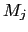) and by
building the model
and 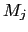) and by
building the model  with the sum of models
with the sum of models  and
complexities, it cancels out the penalty term avoiding the need to
set any
and
complexities, it cancels out the penalty term avoiding the need to
set any  value. The result is equivalent to the GLR metric
where the models have the complexity constraint imposed to them.
value. The result is equivalent to the GLR metric
where the models have the complexity constraint imposed to them.
In the formulation of BIC by Schwarz (1978) the number of acoustic vectors available to train the model were supposed to be infinite for the approximation to converge. In real applications this becomes a problem when there is a big mismatch between the length of the two adjacent windows or clusters being compared. Some people have successfully applied slight modification to the original formula, either to the penalty term (Perez-Freire and Garcia-Mateo, 2004) or to the overall value (Vandecatseye and Martens, 2003) to reduce this effect.
Several implementations using BIC as a segmentation metric have been proposed. Initially Shaobing Chen and Gopalakrishnan (1998) proposed a multiple changing point detection algorithm in two passes, and later Tritschler and Gopinath (1999), Sivakumaran et al. (2001), sian Cheng and min Wang (2003), Lu and Zhang (2002a), Cettolo and Vescovi (2003) and Vescovi et al. (2003) followed with one or two-pass algorithms. They all propose a system using a growing window with inner variable length analysis segments to iteratively find the changing points. Tritschler and Gopinath (1999) propose some ways to make the algorithm faster and to focus on detecting very short speaker changes. In Sivakumaran et al. (2001), Cettolo and Vescovi (2003) and Vescovi et al. (2003) speedups are proposed in ways of computing the mean and variances of the models. In Roch and Cheng (2004) a MAP-adapted version of the models is presented, which allows for shorter speaker change points to be found. By using MAP, this work opposes to the way the models are described to be trained in the original formula (which defines an ML criterion).
Even with the efforts to speed up the processing of BIC, it is computationally more intensive than other statistics-based metrics when used to analyze the signal with high resolution, but its good performance has kept it as the algorithm of choice in many applications. This is why some people have proposed BIC as the second pass (refinement) of a 2-pass speaker segmentation system. As described earlier, an important step in this direction is taken with DISTBIC (Delacourt and Wellekens (2000), Delacourt et al. (1999a), Delacourt et al. (1999b)) where the GLR is used as a first pass. Also in this direction are Zhou and Hansen (2000), Kim et al. (2005) and Tranter and Reynolds (2004), proposing to use Hotelling's 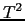 distance, and Lu and Zhang (2002a) using KL2 (Kullback-Leibler) distance. In Vandecatseye et al. (2004), a normalized GLR (called NLLR) is used as a first pass and a normalized BIC is used in the refinement step.
Some research has been done to combine alternative sources of information to help the BIC in finding the optimum change point. This is the case in Perez-Freire and Garcia-Mateo (2004) where image shot boundaries are used.
In sian Cheng and min Wang (2004) a two-pass algorithm using BIC in both passes is proposed. This is peculiar in that instead of producing a first step with high false alarm errors (FA) and a second step that merges some of the change-points, the first step tries to minimize the FA and the second step finds the rest of unseen speaker changes.
and determining the distance as 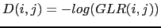 which, upon using an appropriate threshold one can decide whether both segments belong to the same speaker or otherwise. The GLR differs from a similar metric called the standard likelihood ratio test (LLR) in that the p.d.f.s for the GLR are unknown and must be estimated directly from the data within each considered segment, whereas in the LLR the models are considered to be known a priori. In speaker segmentation, the GLR is usually used with two adjacent segments of the same size which are scrolled through the signal, and the threshold is either pre-fixed or it dynamically adapts.
In Bonastre et al. (2000) the GLR is used to segment the signal into speaker turns in a single step processing for speaker tracking. The threshold is set so that miss errors are minimized (at the cost of higher false alarms), as each segment is then independently considered as a potential speaker in the tracking algorithm.
In Gangadharaiah et al. (2004) a two-speaker segmentation is performed in two steps. In the first step, GLR is used to over-segment the data. In a second step, ``seed'' segments are selected for both speakers and the rest are assigned to either speaker with a Viterbi decoding / ML approach without modifying the defined change-points.
On the same two-speaker detection task, in Adami, Kajarekar and Hermansky (2002) the first second of speech is considered to be from the first speaker and the second speaker is found determining the change-points via GLR. A second step assigns segments of speech to either speaker by comparing the GLR score of each of the two speakers computed across the recording and selecting the regions where either one is higher.
On the task of change detection for transcription and indexing in Liu and Kubala (1999) a penalized GLR is used as a second step, to accept/reject change-points previously found using a pre-trained phone-based decoder (where the ASR phone-set has been reduced into phone clusters). The penalty applied to the GLR is proportional to the amount of training data available in the two segments as
| 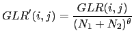 | (2.6) |
where  is determined empirically. On the same
note, Metze et al. (2004) use the GLR for a segmentation step in
a transcription system for meetings.
is determined empirically. On the same
note, Metze et al. (2004) use the GLR for a segmentation step in
a transcription system for meetings.
Probably the most representative algorithm of the use of GLR for speaker segmentation is DISTBIC (Delacourt and Wellekens (1999), Delacourt et al. (1999a), Delacourt et al. (1999b), Delacourt and Wellekens (2000)) where GLR is proposed as the first step of a two-step segmentation process (using BIC as the second metric). Instead of using the GLR distance by itself, a low pass filtering is applied to it in order to reduce ripples in the computed distance function (which would generate false maxima/minima points) and then the difference between each local maxima and adjacent minima is used to assert the change-points.
| 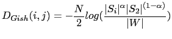 | (2.7) |
where  and 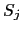 represent the sample
covariance matrices for each segment,
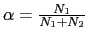 and
and 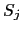 represent the sample
covariance matrices for each segment,
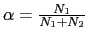 and  is their sample weighted
average
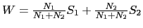.
is their sample weighted
average
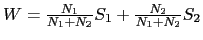.
In Kemp et al. (2000) the Gish distance is compared to other techniques for speaker segmentation.
| 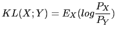 | (2.8) |
Where 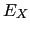 is the expected value with respect to the PDF of X. When the two distributions are taken to be Gaussian, one can obtain a closed form solution to such expression (Campbell, 1997) as
| 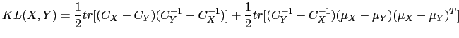 | (2.9) |
For GMM models there is no closed form solution and the KL divergence needs to be computed using sample theory or one needs to use approximations as shown below. The KL2 divergence can be obtained by symmetrizing the KL in the following way:
| 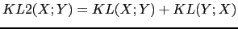 | (2.10) |
As previously, if both distributions X and Y are considered to be Gaussian one can obtain a closed form solution for the KL2 distance as a function of their covariance matrices and means.
Given any two acoustic segments 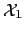 and 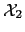 can be considered as X and Y and therefore obtain the distance between them using these metrics.
In Delacourt and Wellekens (2000), the KL2 distance is considered as a first of two steps for speaker change detection. In Zochova and Radova (2005) KL2 is used again in an improved version of the previous algorithm.
In Hung et al. (2000) the MFCC acoustic vectors are initially processed via a PCA dimensionality reduction for each of the contiguous scrolling segments (either two independent PCA or one applied to both segments) and then Mahalanobis, KL and Bhattacharyya distances are used to determine if there is a change point.
| 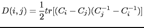 | (2.11) |
In Kim et al. (2005) it is used in a single-step algorithm and its results are compared to BIC.
The DSD is also used in Lu and Zhang (2002a) as a first step of a two step segmentation system, using BIC in the refinement step. In Lu and Zhang (2002b) some speed-ups are proposed to make the previous system real-time.
The same authors present in Wu et al. (2003b), Wu et al. (2003a) and Wu et al. (2003c) an improvement to the algorithm using DSD and a Universal Background Model (UBM) trained from only the data in the processed data. Evaluation of the likelihood of the data according to the UBM is used to categorize the features in each analysis segment and only the good quality speech frames from each one are compared to each other. They use an adaptive threshold (adapted from previous values) to determine change points.
Such work is inspired by Beigi and Maes (1998) where each segment is clustered into one of three classes via k-means and a global distance is computed by combining the distances between classes. There is no word in this work regarding to which particular distance is used between the classes.
| 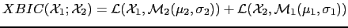 | (2.12) |
In Malegaonkar et al. (2006) they propose a similar metric and study different likelihood normalization techniques to make the metric more robust, achieving better results than BIC for speaker segmentation.
In Omar et al. (2005) the CuSum distance (Basseville and Nikiforov, 1993), the Kolmogorov-Smirnov test (Deshayes and Picard, 1986) and BIC are first used independently to find putative change points and then fused at likelihood level to assert those changes.
In (Hung et al., 2000) the Malalanobis and Bhattacharyya distances (Campbell, 1997) are used in comparison to the KL distance for change detection.
In Kemp et al. (2000) the entropy loss (Lee, 1998) of coding the data in two segments instead of only one is proposed in comparison to the Gish and KL distances.
Mori and Nakagawa (2001) apply VQ (Vector quantization) techniques to create a codebook from one of two adjacent segments and applies a VQ distortion measure (Nakagawa and Suzuki, 1993) to compare its similarity with the other segment. Results are compared to GLR and BIC techniques.
In Zhou and Hansen (2000) and Tranter and Reynolds (2004) Hotelling's distance is proposed, being a multivariate analog of the t-distribution. It is applied for the first step of a two-step segmentation algorithm. It finds the distance between two segments, modeling each one with a single Gaussian where both covariance matrices are set to be the same.
All of these metric-based techniques compute a function whose maxima/minima need to be compared with a threshold in order to determine the suitability of every change point. In many cases the threshold is defined empirically given a development set, according to a desired performance. Such proceeding leads to a threshold which is normally dependent on the data being processed and that needs to be redefined every time data of a different nature needs to be processed. This problem has been studied within the speaker identification community in order to classify speakers in an open set speaker identification task (see for example Campbell (1997)). In the area of speaker segmentation and clustering some publications propose automatic ways to define appropriate thresholds, for example:
| 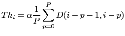 | (2.13) |
where 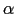 is an amplification coefficient (usually set close to 1).
The same adaptive threshold is used in Wu et al. (2003b), Wu et al. (2003a) and Wu et al. (2003c) to evaluate the difference between the local maxima and the neighboring minima distance points.
| 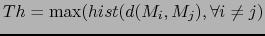 | (2.14) |
where 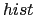 denotes the histogram and 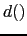 is the distance between two models, which in that work is defined as a modified KL distance to compare two GMM models.